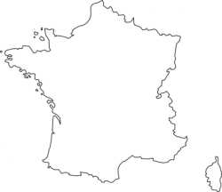

Calvary Chapel France
Bienvenue
Bienvenue sur le site de Calvary Chapel en France. Vous trouverez ici les adresses des églises Calvary Chapel en France. Pour l'instant, il y en a trois: à Lyon, Nice et Paris.
Dans un futur proche nous espérons mettre à disposition des ressources bibliques sur ce site. Revenez voir cet hiver pour profiter de ces ressources.
Que Dieu vous garde et vous bénisse.

Calvary Chapel Lyon
calvarychapellyon [at] gmail [point] com
07 70 71 90 00